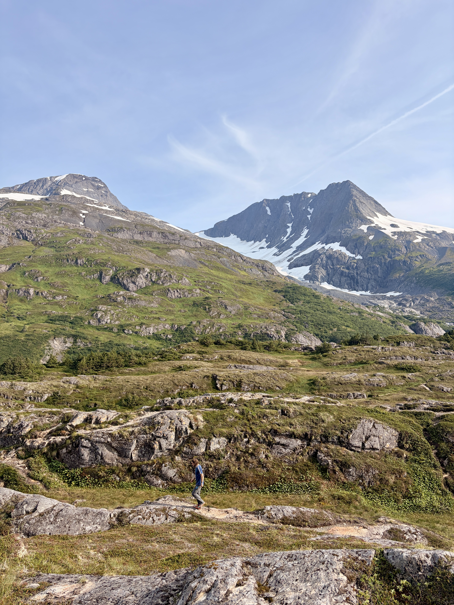

The Story Behind the Lens
Originally from the Midwest, my creative focus completely shifted when I moved out to the western United States. Driven by a love for wide-open spaces and mountain trails, I traded the indoor studio for the elements to shoot landscapes in their rawest, most natural forms.
Blending a love for the outdoors with clean, strategic marketing and design.
My Creative Philosophy
Natural Balance
I love building brand styles with deep earth tones and rich textures inspired by the places I explore. Dropping sterile defaults makes room for warmth and breathing space in a layout.
Real Storytelling
Visual projects have to do more than just look pretty—they need to function well. Whether creating a magazine cover layout or high-contrast web designs, data and intent shape all my layout choices.
Conservation Focused
My landscape prints and mixed-media designs are made to honor untouched environments. Every single shot focuses on tracking natural lighting shifts and sharing local wilderness stories.
Let's Make Something Cool
Want to collaborate on a publication layout, update your brand strategy, or talk about a custom landscape photography commission?